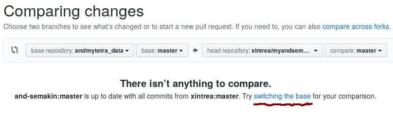

Не все знают, но на Github.com есть возможность синхронизировать форк через веб-интерфейс.
Делается это следующим образом:
- Выбираем форк, изменения для которого нужно получить из основного репозитария (форк, естественно, находится под управлением нашего аккаута)
- Далее надо выбрать вкладку Pull Requests, и нажать кнопку New Pull Request. По-умолчанию GitHub будет сравнивать форк с оригинальным репозиторием и не будет видеть никаких изменений, если изменения в форк не вносились. Выглядеть это будет так:

- Далее надо нажать ссылку switching the base. GitHub запустить процедуру сравнения оригинального репозитория с форком и можно будет увидеть все последние изменения.
- Далее надо нажать кнопку Сreate pull request и указать осмысленное имя для Pull request. Можно написать что-то типа такого: «Изменения из оригинального репозитория», после чего нажать кнопку Send pull request. Таким образом, будет создан пулл-реквест с последними изменениями из оригинального репозитария, который отправляется пользователем форка самому себе.
- Далеее следует пролистать страницу вниз, и нажать кнопку Merge pull request, а затем кнопку Confirm merge. Если в коде самого форка не содержалось никаких изменений (обычно так и есть), то слияние кода будет произведено автоматически.